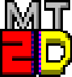

Welcome to the MT2D Engine Web page.
Monochrome text 2D engine, is an FRAMEWORK where you can produce software
based on text user interface or even Graphics user interface, using a real terminal or an emulated one.
As the name says, there's no color, and (in most of the cases) there're no size change, it's just the
basic 25x80 screen (there may be some platform specific console size where the
size is not going to be 25x80).
WINDOWS (Graphics and Real Terminal support)
MS-DOS (Graphics and Real Terminal support)
LINUX (Graphics support [Real terminal support is quite slow and broken])
WINDOWS PHONE (Graphics support)
ANDROID (Graphics support [alpha stage])
Graphics mode is mode where you can render image files and also having an emulated 80x25 terminal, this mode has a limited support, for now it only works in MS-DOS and also platforms where it's supported by SDL.
ObjectCore is a simple way of making "Objects", those objects have a basic set of instructions, they have a screen coordinate, size, dynamic data types support and also an a set of states where you define step by step what this object should perform.
Each state can store a set of sprites (being in ASCII or images), a set of wait states and also Cscripts.
In short, it is a single var like int, but his data can be an integer, float, string, char, bool,pointer,...
This type of dynamic data is used to store information for the objects, like you could store a health data, race data,...
Or you could use it in your code without the ObjectCore part.
Cscript is a simple but powerfull script support for C created by me :D, with that you can add for each frame of an object an action function, the action function is just like a normal c function, and this part is where you can take a huge advantage of it, if the build in Cscript functions in STDFunctions aren't what you need, you can simply create a new function in C or C++ and link it without any difficulty into your object states.
As an example, in Project Asteroid I had done a new Cscript function just for the menu so the option menu would call a single function where it would check the keyboard and also move the options or enter in the selected option. All that in a single Cscript function call.
Yes, here's a list with mixed source and video files:
Contra Clone Gameplay (ASCII and Sprites hibrid gameplay)
Path Finder program running on a Windows Phone device
HexStartup++ software for converting Graphic images into Hexen compatible loading images.
Pong gameplay running on MS-DOS
Interactive asm compiler and 8086 emulator
About the license: It's going to be in MIT so don't be afraid to use MT2D :D